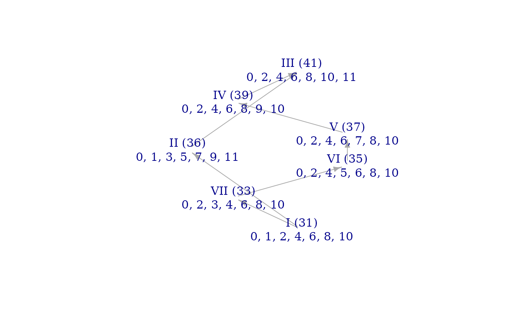
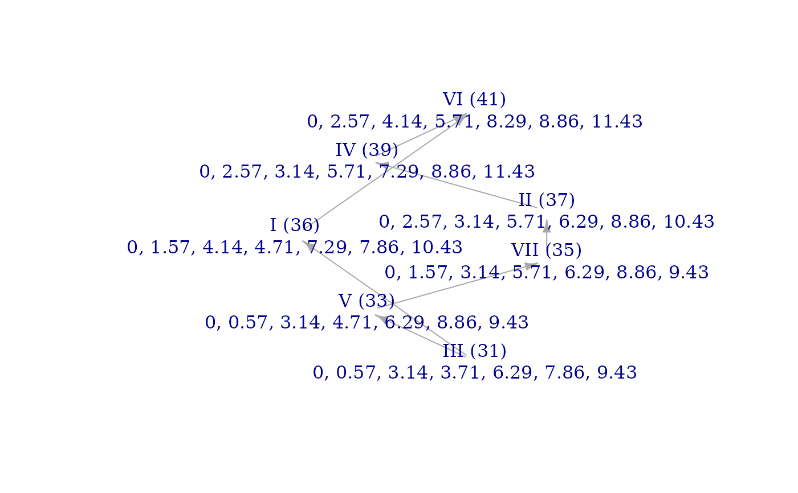

Produces scales of different colors which have equivalent scalar properties. The hyperplane arrangements of MCT have three types of symmetry, which allows us to find scales at different but equivalent points in the arrangement. Such scales will be nearly structurally identical in most senses although their specific intervals will be rather different. See details for a discussion of the symmetries involved.
Arguments
- set
Numeric vector of pitch-classes in the set
- a
Integer: controls permutations of generic intervals. Must be coprime to the size of the set. Defaults to
1.- b
Integer: controls modal rotation. Defaults to
0.- involution
Boolean: controls involutional symmetry. Defaults to
FALSE.- edo
Number of unit steps in an octave. Defaults to
12.
Value
Numeric vector representing a scale of same length as set.
Default parameters determine the identity symmetry and will return
set itself.
Details
Two symmetries of the MCT hyperplane arrangement are familiar.
One is modal "rotation":
two modes of the same scale must have equivalent structures, by the
defining relations of the theory. The parameter b controls these rotations.
The second familiar symmetry is involution (see "Modal Color Theory," 32).
Set parameter involution to TRUE to apply this symmetry. The more
interesting symmetry of the MCT arrangements is controlled by parameter a.
This symmetry allows us to permute the roles of the scale's generic intervals
in its scalar makeup. For instance, non-degenerate well-formed scales (see
iswellformed() are all generated by a particular generic interval. The
familiar diatonic scale is generated by its generic fourths, whereas
another well-formed scale like (0, 2, 3, 5, 6, 7, 9) in 10edo (with step-word
LSLSSLS) is generated by its generic sixths. We can permute the hyperplanes
of the heptachordal MCT arrangement so that the overall structure is
preserved but the diatonic scale is mapped onto LSLSSLS. In general, the
permutations of ineqsym() allow us to map any non-degenerate well-formed
scale onto any other: they form an orbit under the symmetries of the space.
This gives another sense in which "well-formedness" is a large family
of scale structures. That sense generalizes to all scales, not just ones
that are highly regular like well-formed scales.
In short, ineqsym() preserves many scalar properties, including:
brightnessgraph()structureisgwf()and a fortioriiswellformed()Number and respective properties of adjacent colors
spectrumcount()up to permutation of the values
Examples
wt_plus_1 <- sc(7,33)
equiv_scale <- ineqsym(wt_plus_1, 3, 2)
both_scales <- cbind(wt_plus_1, equiv_scale)
freedoms <- apply(both_scales, 2, howfree)
evennesses <- round(apply(both_scales, 2, evenness), 3)
svzeroes <- apply(both_scales, 2, countsvzeroes)
ratios <- round(apply(both_scales, 2, ratio), 3)
spectra <- apply(apply(both_scales, 2, spectrumcount), 2, toString)
cbind(freedoms, evennesses, svzeroes, ratios, spectra)
#> freedoms evennesses svzeroes ratios spectra
#> wt_plus_1 "1" "1.195" "16" "1.5" "2, 3, 3, 3, 3, 2"
#> equiv_scale "1" "1.195" "16" "1.5" "3, 2, 3, 3, 2, 3"
brightnessgraph(wt_plus_1)

brightnessgraph(equiv_scale)
